O endereço certo para morar ou investir em Perdizes. Studios, 1 e 2 dormitórios e 2 suítes, ao lado do Allianz Parque e perto da futura estação PUC-Cardoso de Almeida.
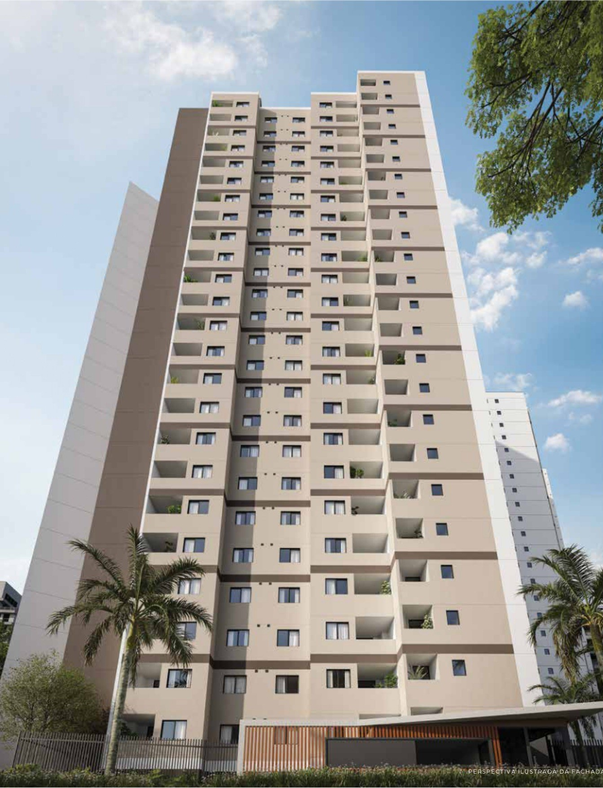
Em Perdizes, um dos bairros mais desejados da cidade, nasce um projeto pensado para quem valoriza o bem-estar em cada detalhe. A união da arquitetura contemporânea, do lazer elevado e de espaços que privilegiam a qualidade de vida.
Aqui, cada escolha foi feita para uma vida mais completa em todos os sentidos.
O empreendimento
O Well Perdizes reúne o que faz um imóvel valer a pena em uma das regiões mais desejadas de São Paulo: localização central, lazer completo e tipologias que atendem de quem mora sozinho a quem investe para alugar.
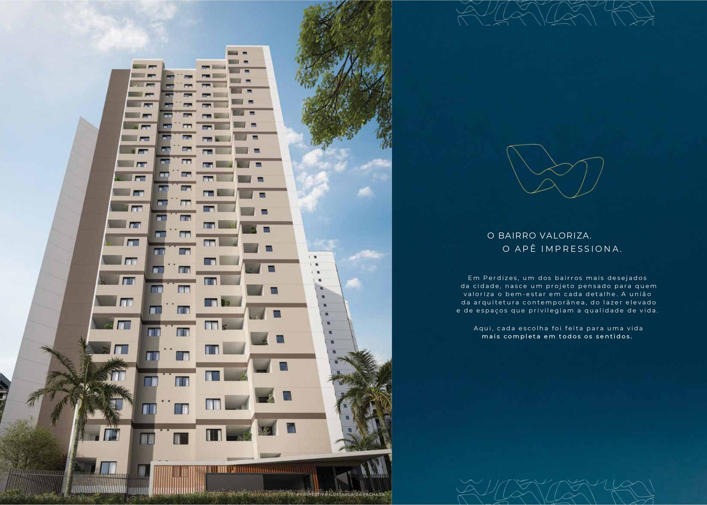
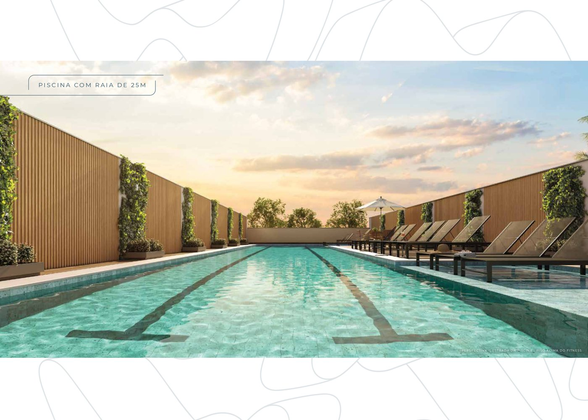
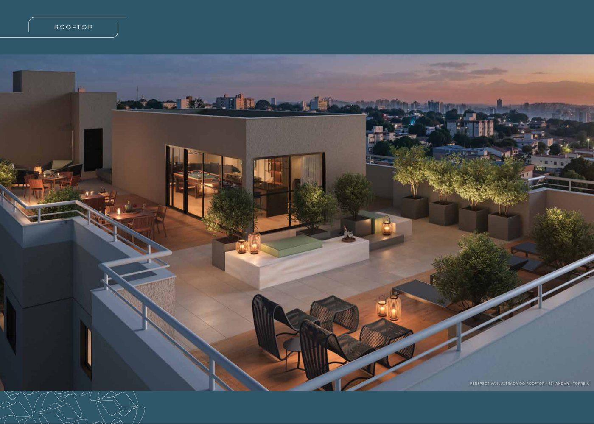
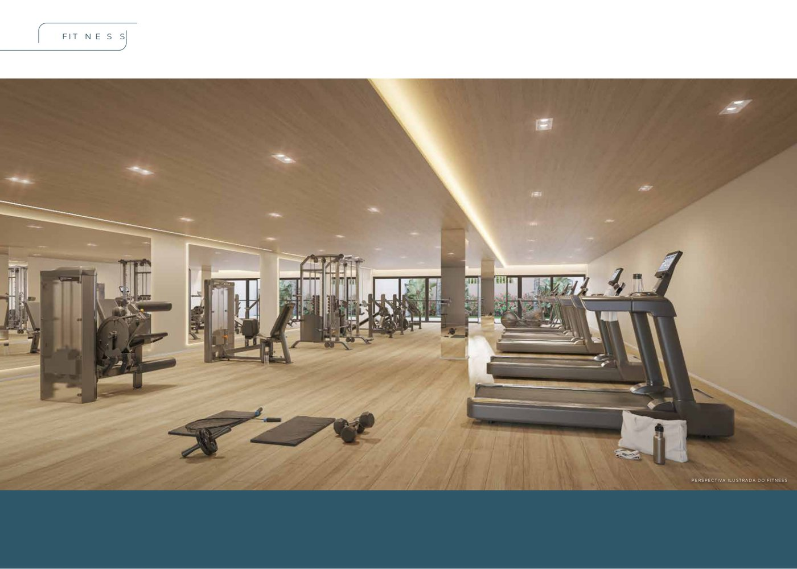
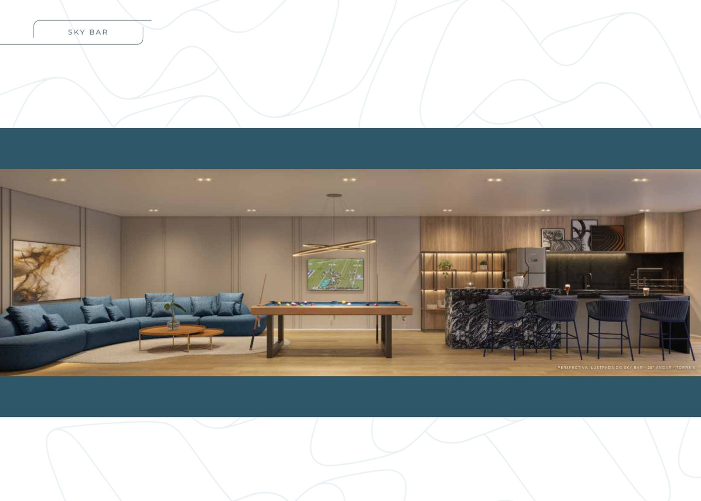
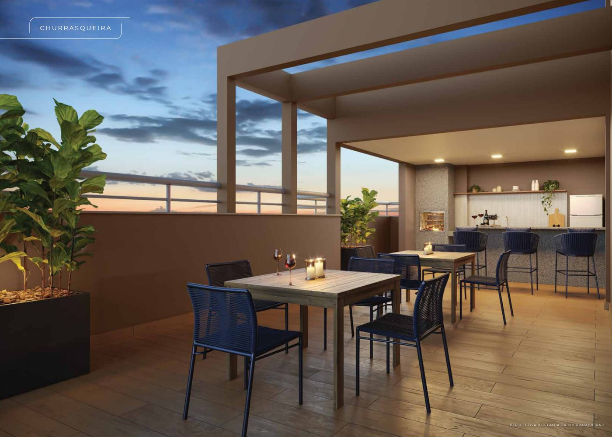
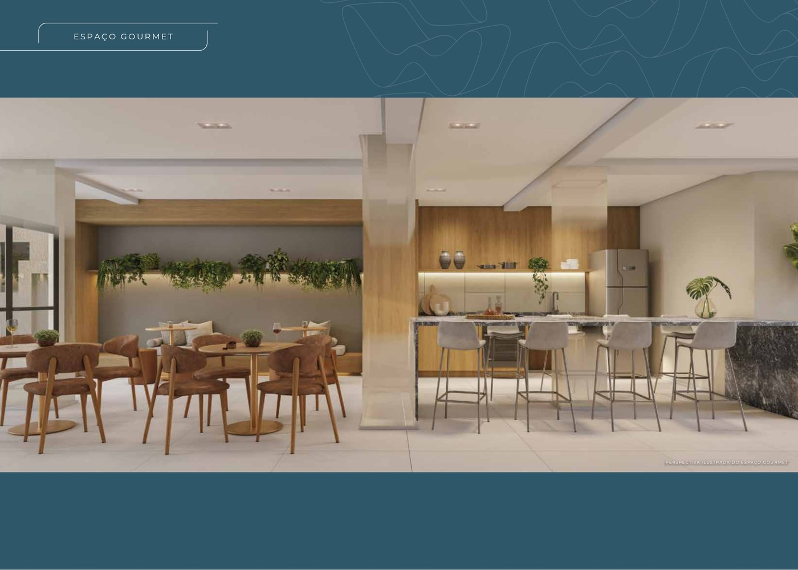
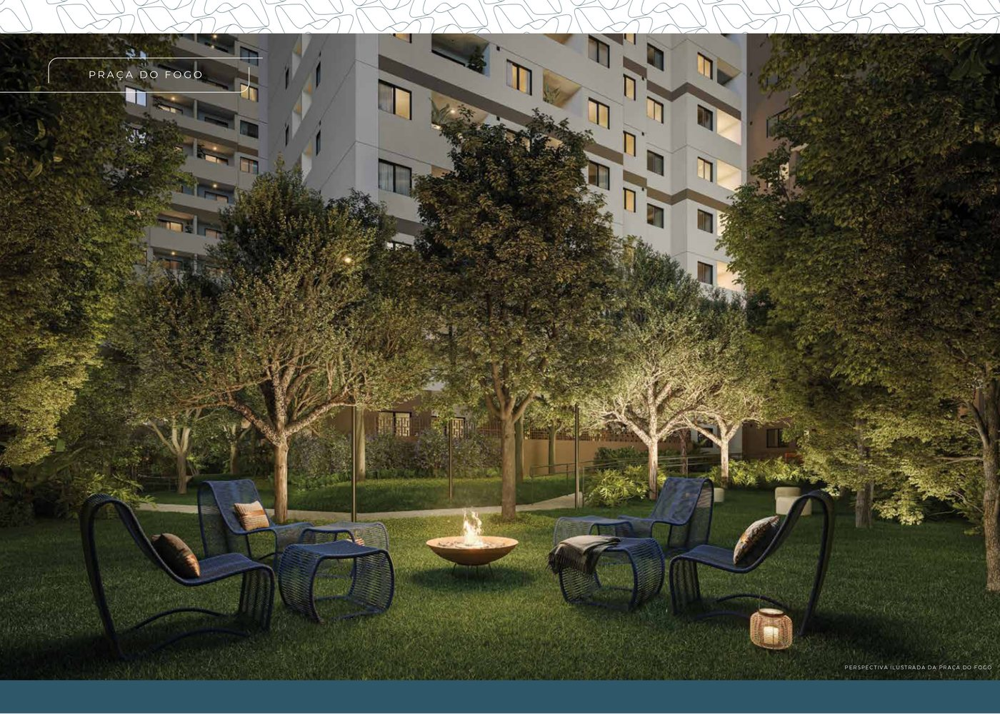
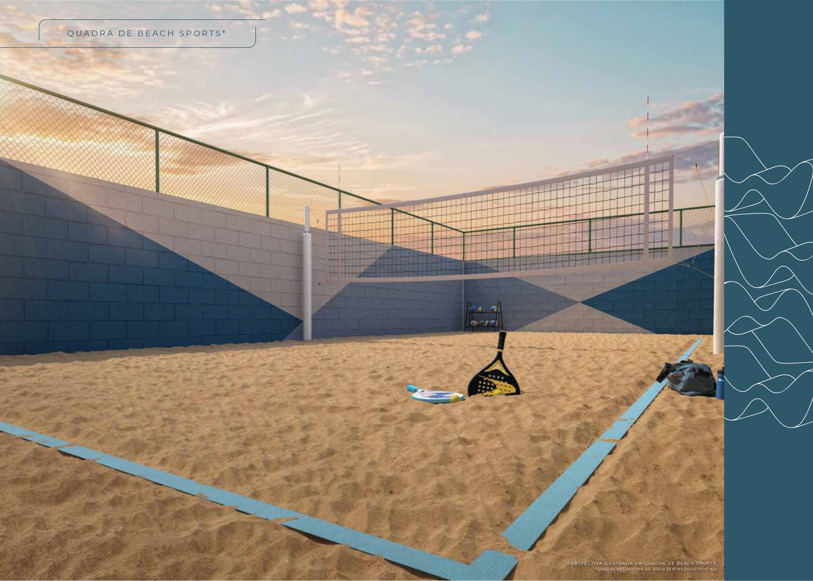
Plantas e unidades
Quatro tipologias para perfis diferentes: quem quer praticidade no studio, quem precisa de um dormitório, a família no dois dormitórios e o conforto das duas suítes. Todas pensadas para aproveitar cada metro.
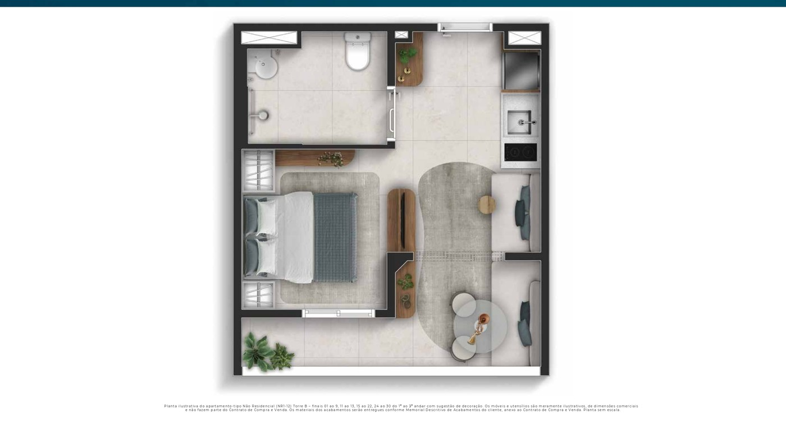
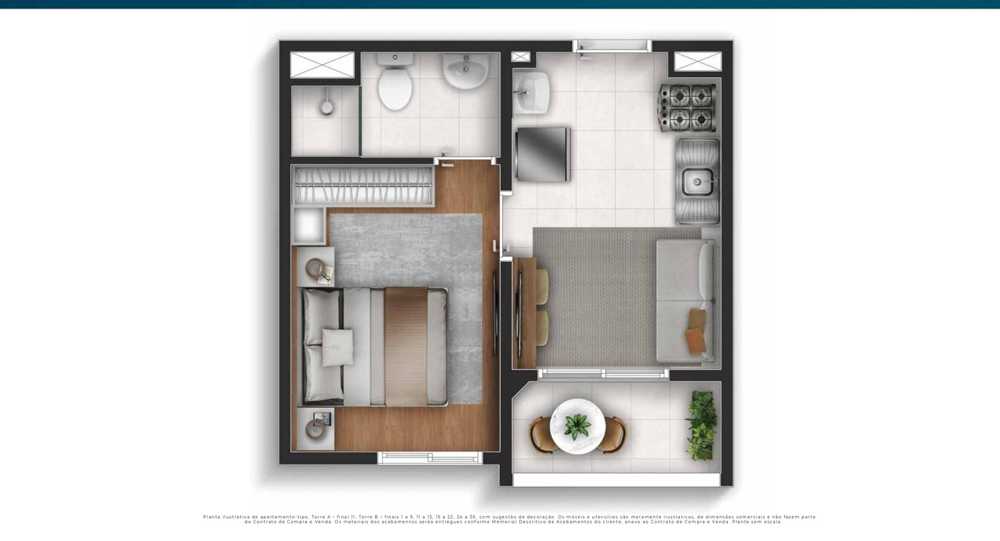
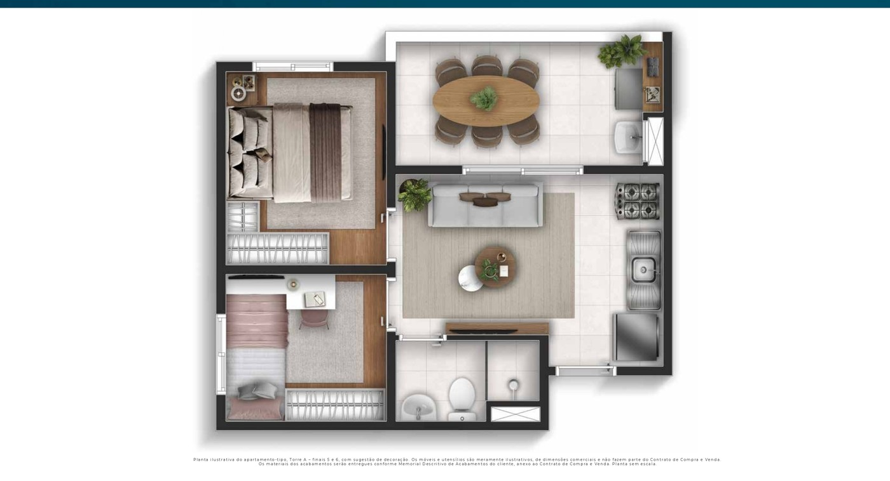
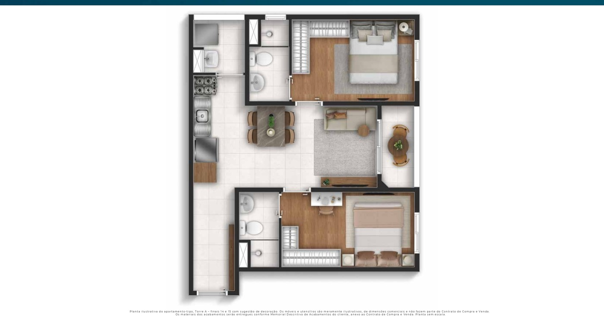
Toque em uma planta para ampliar
Lazer completo
Uma estrutura de lazer pensada para todas as idades e rotinas — do treino de manhã ao happy hour com os amigos.
Localização
Perto de tudo o que facilita o dia a dia — mobilidade, ensino, lazer e serviços a poucos minutos.
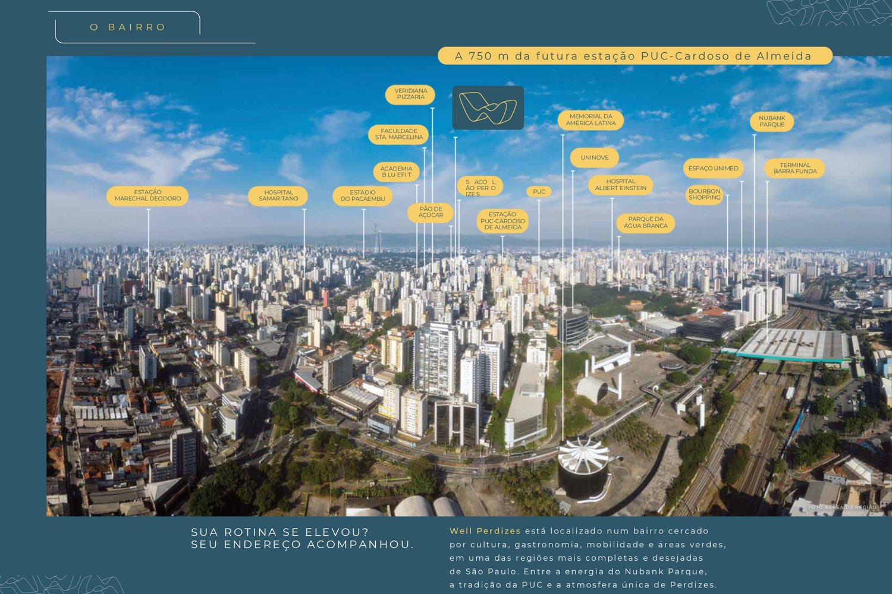
Perguntas frequentes
Sim. As unidades do Well Perdizes se enquadram no programa Minha Casa Minha Vida, com as condições de financiamento facilitadas para quem tem direito. O enquadramento depende do valor da unidade e da renda familiar — a simulação com o corretor responsável confirma o seu caso com os números atuais.
O empreendimento oferece studios, apartamentos de 1 dormitório, de 2 dormitórios e opções de 2 suítes. Essa variedade atende a perfis diferentes — de quem mora sozinho a famílias e investidores.
O Well Perdizes fica em Perdizes, São Paulo, ao lado do Allianz Parque. Tem acesso fácil ao Metrô Barra Funda, fica próximo da futura estação PUC-Cardoso de Almeida e perto da PUC-SP, FAAP, Mackenzie, do Shopping Bourbon e do Parque da Água Branca.
A localização favorece o investimento: a proximidade da PUC-SP, FAAP e Mackenzie sustenta demanda constante de locação, e as tipologias compactas — como studios e dormitórios — são as mais procuradas por esse público. A rentabilidade real depende da unidade e das condições de mercado no momento da compra.
O Well Perdizes conta com piscina, academia, quadra de beach tennis, salão de festas, churrasqueira, brinquedoteca, pet place e espaços de convivência, além de estrutura de segurança para aproveitar o lazer com tranquilidade.
Você pode falar diretamente com o corretor responsável, Adriano Souza (CRECI 207.810-F), pelo WhatsApp (11) 98991-1000 ou pelo formulário nesta página. Ele passa as plantas, os valores e as condições atualizadas do Minha Casa Minha Vida.
Preencha e o corretor responsável entra em contato com plantas, valores e as condições do Minha Casa Minha Vida.